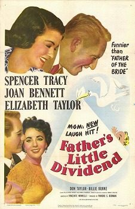

Father's Little Dividend

Starring: Spencer Tracy, Joan Bennett, Elizabeth Taylor
Director: Vincente Minnelli
Writer: Albert Hackett, Frances Goodrich
Producer: Pandro S. Berman
Father's Little Dividend is a 1951 American comedy film directed by Vincente Minnelli and starring Spencer Tracy, Joan Bennett, and Elizabeth Taylor. The film is the sequel to Father of the Bride (1950).
Watch Online: Internet Archive
Trivia
- Father of the Bride was such a hit at the box office and with critics that MGM rushed a sequel into production in 1950.
- Spencer Tracy and Joan Bennett had appeared in films together at Fox two decades earlier, including Me and My Gal, in which their characters marry, and She Wanted a Millionaire.
- According to film critic Leonard Maltin, this film was one of the first examples of a modern film sequel.
Previous Showings
5 Runs • 2 Festivals
All runs on record (5):
- July 9 - 10, 1990w/ The Long Long Trailer
- May 16 - 17, 1991w/ She Wanted a Millionaire
- January 1 - 5, 1996w/ Gigi
- April 9 - 11, 2011Elizabeth Taylorw/ Father of the Bride
- July 11 - 14, 2024Directed by Vincente Minnelliw/ Father of the Bride